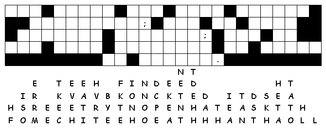

This Week: Hosea 1:2-10 and Psalm 85 or Genesis 18:20-32 and Psalm 138, Colossians 2:6-15, (16-19), Luke 11:1-13
Middle-School Pew-work
What
is the big change in the world that you are waiting for, praying
for?
________________________________________________________________________
________________________________________________________________________
________________________________________________________________________
________________________________________________________________________
________________________________________________________________________
________________________________________________________________________
________________________________________________________________________
________________________________________________________________________
________________________________________________________________________

Created
by Puzzlemaker
at DiscoverySchool.com
Next week: Hosea 11:1-11 and Psalm 107:1-9, 43 or Ecclesiastes 1:2, 12-14; 2:18-23 and Psalm 49:1-12 Colossians 3:1-11 Luke 12:13-21